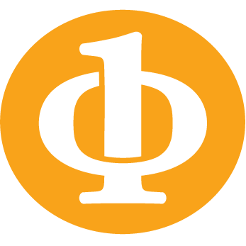
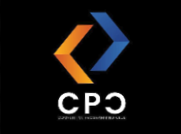

DevOps, cloud and AI engineering student in Sfax. I build production-grade pipelines, from infrastructure as code to the intelligent systems running on top.
01 whoami
I'm an engineering student at the Faculty of Sciences, University of Sfax, currently pursuing a Data Engineering cycle. I'm passionate about DevOps, Cloud infrastructure, and AI systems.
I design end-to-end DevSecOps pipelines, deploy Kubernetes clusters using IaC, and build AI platforms, from sign language recognition to intelligent job-matching engines. I believe great infrastructure is invisible, and great AI is useful.
Ex-Chairman of the IEEE FSS Computer Society Chapter and founder of the Competitive Programming Club at Faculty of Sciences of Sfax. Currently seeking an internship to apply my skills on real-world challenges.
– public repos – followers on GitHub since –
02 ls ~/skills
03 ls ~/projects
04 git log --career
OliveSoft
Built a self-hosted Charmed Kubeflow platform on Proxmox VE from scratch, automated from bare metal up. Terraform provisions the VMs and Ansible turns them into a 3-node MicroK8s cluster. Kubeflow is deployed with Juju, with Pipelines, Elyra visual pipelines, Katib, MLflow and KServe.
Multi-tenancy through GitLab and Dex single sign-on, with an isolated namespace, dedicated MinIO storage and credentials for every user. A custom FastAPI admin portal provisions users and applies resource quota groups, and scripted recovery brings the cluster back after power cuts.
Data Engineering & Semantics Research Unit, University of Sfax
Deployed a self-hosted multi-user JupyterHub platform on a Kubernetes cluster (Proxmox/Terraform). Full lifecycle automated with Ansible and Helm for reproducible, scalable research infrastructure.
SIFAST, Sfax
Designed and implemented a fully automated end-to-end DevSecOps pipeline integrating IaC (Terraform, Ansible), CI/CD (Jenkins, SonarQube, Trivy), artifact management (Nexus), and GitOps deployment (ArgoCD, Helm, K8s). Monitored production with Prometheus and Grafana, routing critical alerts to Slack.
Wedtect
Designed an end-to-end IoT data pipeline for LoRaWAN device monitoring using ChirpStack on Raspberry Pi, ingesting unstructured sensor data into MongoDB for real-time analysis.
Faculty of Sciences, University of Sfax, Tunisia
Engineering curriculum focused on Big Data, Cloud Infrastructure, AI systems, and distributed computing. Active in research and competition projects throughout the program.
Faculty of Sciences, University of Sfax, Tunisia
Intensive preparatory cycle covering mathematics, algorithms, data structures, and computer science fundamentals, the foundation for competitive engineering programs.
05 ls -la credentials/

IEEE FSS Computer Society Chapter
Jan 2025 – Jan 2026
Organized events, workshops, and competitions to engage members and foster professional growth within the IEEE student community at Faculty of Sciences of Sfax.

Competitive Programming Club, FSS
Sep 2023 – Sep 2024
Founded and led the club with a core team, growing membership to 100+ students. Improved average problem-solving scores by 25% through structured training programs.
06 mail --to mya
Open to internship opportunities, DevOps/AI collaborations, or a good conversation about infrastructure and AI. Email is the fastest way to reach me.